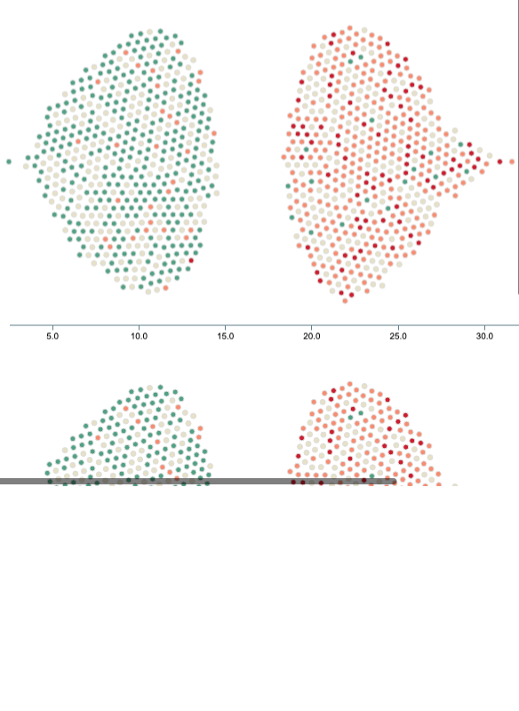

When looking at the 500 counties with the most people with medical debt, and the 500 counties with the least people with medical debt, there is a disparity with how many chronic conditions they have.
Percentage of US county that has some medical debt in collections (Top 500/Bottom 500)
Under 10% have 6+ chronic conditions
10-19% have 6+ chronic conditions
20-29% have 6+ chronic conditions
Over 30% have 6+ chronic conditions
